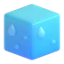

Fiche de révision · Mathématiques · CEB 6e primaire

Les solidesLa règle
- Un polyèdre n'a que des faces planes (cube, pavé, prismes, pyramides). Le cylindre, le cône et la sphère ont une surface courbe : ce ne sont pas des polyèdres.
- Face = surface plane ; arête = segment où deux faces se rejoignent ; sommet = point où plusieurs arêtes se rejoignent.
- Cube et pavé droit : 6 faces, 12 arêtes, 8 sommets.
- Pyramide à base carrée : 5 faces, 8 arêtes, 5 sommets. Prisme à base triangulaire : 5 faces, 9 arêtes, 6 sommets.
- Pavé droit : chaque face est parallèle (et isométrique) à la face opposée, et perpendiculaire aux 4 autres.
Exemple
Un prisme dont la base a n côtés a n + 2 faces, 3 × n arêtes et 2 × n sommets.
 Astuce
Astuce
Une pyramide dont la base a n côtés a n + 1 faces, 2 × n arêtes et n + 1 sommets.